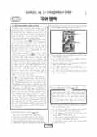

문제지


시험지를 먼저 풀어 보세요. 등급컷·표준점수·난이도는 흐리게 가려 뒀어요.
| 등급 | 원점수 | 표준점수 | 백분위 | 누적 |
|---|---|---|---|---|
| 1 | 89 | 134 | 96 | 4.03% |
| 2 | 81 | 126 | 89 | 11.79% |
| 3 | 71 | 116 | 76 | 24% |
| 4 | 61 | 106 | 59 | 40.86% |
| 5 | 50 | 94 | 39 | 60.13% |
| 6 | 40 | 84 | 22 | 78.12% |
| 7 | 30 | 74 | 10 | 90.05% |
| 8 | 21 | 65 | 4 | 96.21% |
등급별 컷 · 만점 100점
| 등급 | 표준점수 이상 | 인원(명) | 비율 |
|---|---|---|---|
| 1 | 134 | 15,760 | 4.15% |
| 2 | 126 | 27,140 | 7.15% |
| 3 | 116 | 49,343 | 13% |
| 4 | 106 | 63,095 | 16.63% |
| 5 | 94 | 76,923 | 20.27% |
| 6 | 84 | 62,952 | 16.59% |
| 7 | 74 | 44,431 | 11.71% |
| 8 | 65 | 25,700 | 6.77% |
| 9 | 43 | 14,076 | 3.71% |
시·도교육청 공개 자료
출처: 시·도교육청이 공개한 전국연합학력평가 성적 분석·통계자료(공개 자료 보기).
발행 기관: 시·도교육청(전국연합학력평가). 파일 위치: 이 사이트가 보관한 사본. 저작권은 발행 기관에 있습니다. 원본과 다르거나 게시 중단이 필요하면 연락처로 알려 주세요. 등급컷 출처 구분은 데이터 원칙에서 설명합니다.
막대 색은 역대 대비 난이도 · 진한 막대가 이 시험 · 막대를 누르면 그 회차로 이동
| 회차 | 1등급컷 | 표점 최고 | 1등급 표점 | 난이도 |
|---|---|---|---|---|
| 3월 학평2026년 고1이 시험 | 89 | 146 | 134 | 매우 쉬움 |
| 10월 학평2025년 고1 | 91 | 142 | 134 | 보통 |
| 9월 학평2025년 고1 | 81 | 156 | 136 | 매우 어려움 |
| 6월 학평2025년 고1 | 86 | 150 | 136 | 어려움 |
| 3월 학평2025년 고1 | 84 | 153 | 135 | 쉬움 |
| 10월 학평2024년 고1 | 89 | 145 | 136 | 어려움 |
| 9월 학평2024년 고1 | 87 | 148 | 136 | 어려움 |
| 6월 학평2024년 고1 | 87 | 146 | 134 | 보통 |
| 3월 학평2024년 고1 | 91 | 141 | 131 | 매우 쉬움 |
| 9월 학평2023년 고1 | 84 | 150 | 135 | 매우 어려움 |